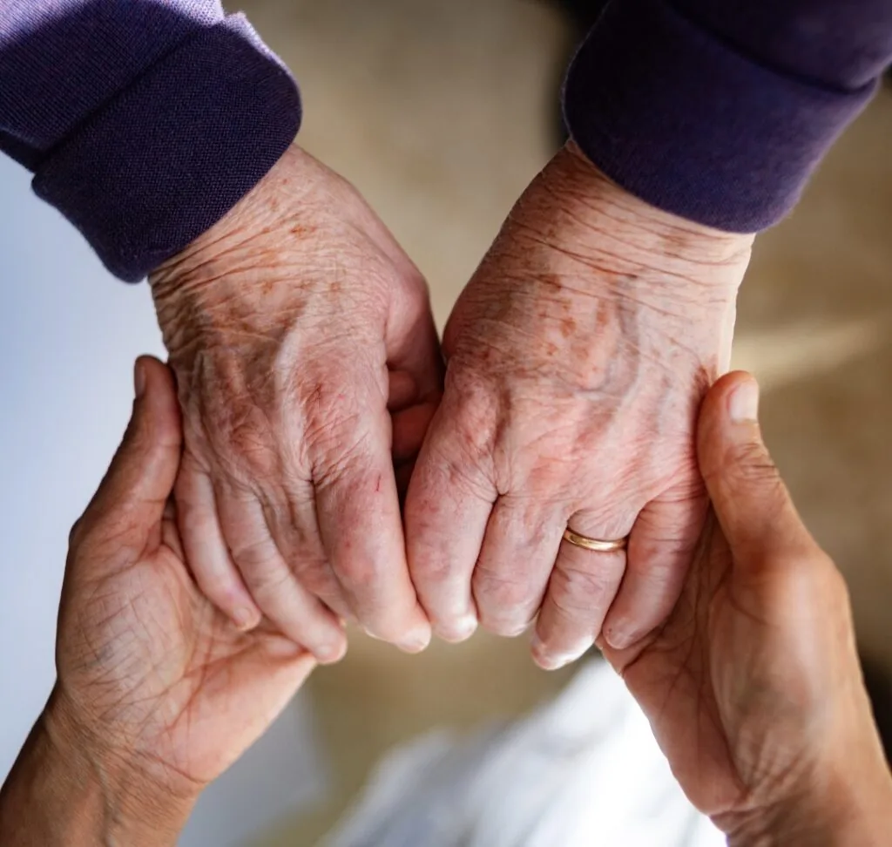
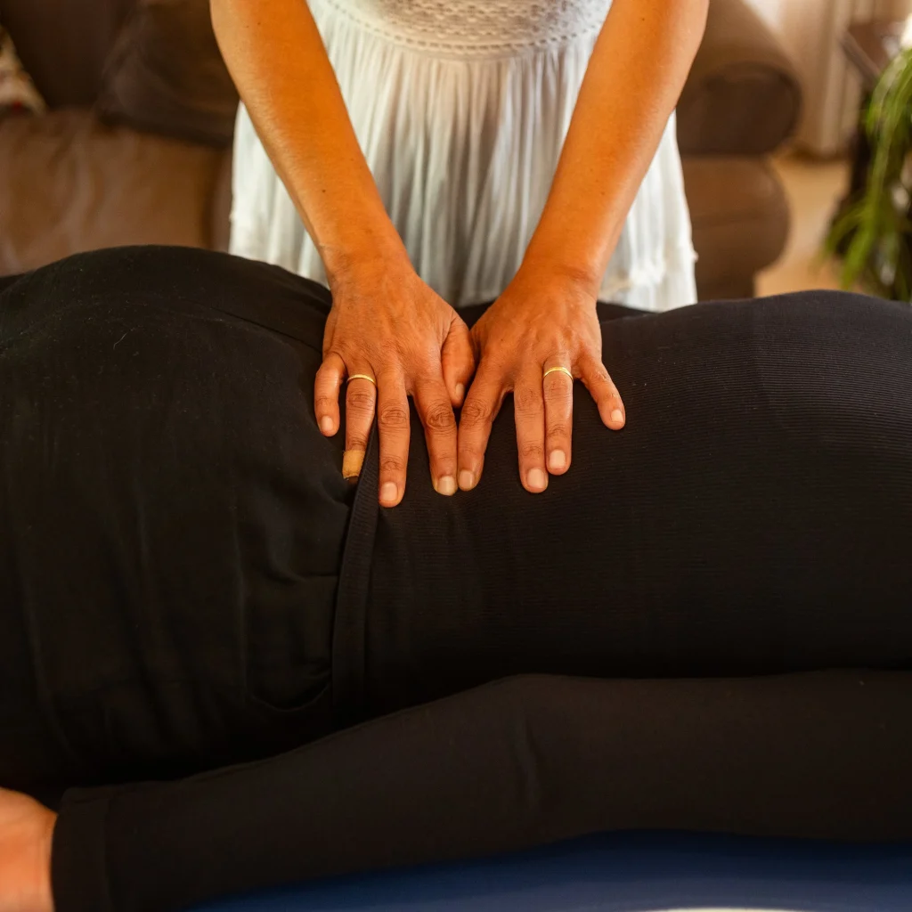
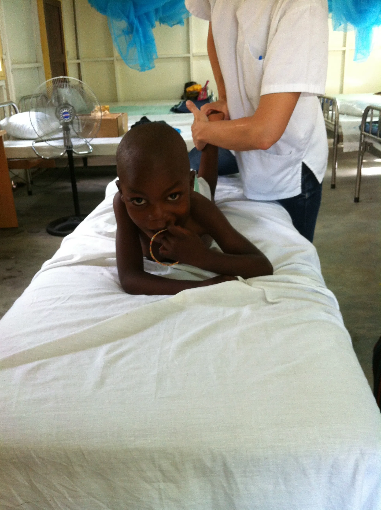

We train hands to remind the body how to heal.
JAS Foundation trains people from low-income communities across the Western Cape as qualified Bowen therapy practitioners ~ gentle, hands-on care for neighbours who would otherwise go without it.

Empowering individuals
Building the capacity of local practitioners through structured training and ongoing support.
Empowering communities
Bringing an accessible healing modality to poor and disadvantaged communities in the Western Cape.
Partnerships
Working alongside partnering organisations and institutions to extend our reach.
Research
Collecting and documenting JAS Foundation's work and its impact over time.
Restorative medicine
Creating the right supportive environment is what activates the body's own capacity to heal.
- The human body performs constant "maintenance," without any conscious effort from you.
- Homeostasis is the body's innate ability to heal itself.
- It's driven by a network of specialised systems working in harmony.
- The nervous system is the body's communication network, and it exists in two states — sympathetic and parasympathetic.
- Real maintenance and healing happen in parasympathetic mode.
- Healing happens at a microscopic scale, every single second.
- Our mental, emotional, and physical states are deeply interlinked, and shape each other constantly.

Supporting your innate healing
The body is powerful, but its self-healing mechanisms still need the right raw materials to work.
- Sleep
- Nutrition
- Stress management
- Movement and exercise
- Muscle-release techniques that speak to the nervous system and "unlock" its own healing protocols
We facilitate. The body does the work.

"I had a very painful life until I started Bowen. Now I can give my grandchild a better hug, I can open a tin of baked beans, I can bend down to wash my hair — things I couldn't do before."Client in Atlantis, Cape Town — August 2024
Two communities. One growing network.
We work in Atlantis and Kewtown today — and we're training the practitioners who'll carry this into the next 150 towns.